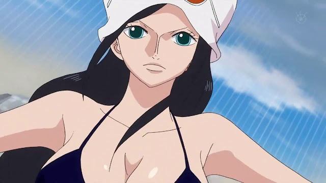

Nico Robin - Arqueóloga
Conhecida também como Criança Demônio e Luz da Revolução. Sexta a entrar no bando do Chapéu de Palha.
Única sobrevivente da ilha destruída Ohara, nascida no West Blue, é também a única pessoa no mundo que consegue ler e decifrar Poneglyphs, uma atividade considerada proibida e que ameaça o Governo Mundial.
Comeu a fruta Hana Hana no Mi, dando a ela habilidade de replicar partes do seu corpo em qualquer superfície, objetos, seres vivos ou em seu próprio corpo.
Seu sonho é alcançar a liberdade para viajar o mundo e estudar seus mistérios.
Sua recompensa atualmente é de  130.000.000
130.000.000